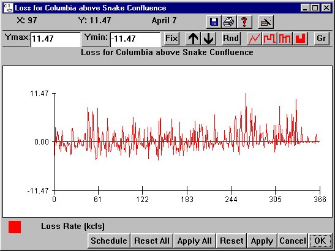

Loss: Flow Loss
Selecting a Reach from Flow Loss opens a window for setting flow loss for the selected river segment. Flow loss in each segment is the loss of flow due to withdrawal, mainly from irrigation, on a daily basis or groundwater input on a daily basis. In the Loss window, positive values represent withdrawals and negative values represent return flows.
Loss opens a window for setting flow loss for the selected river segment. Flow loss in each segment is the loss of flow due to withdrawal, mainly from irrigation, on a daily basis or groundwater input on a daily basis. In the Loss window, positive values represent withdrawals and negative values represent return flows.
The loss data in a segment represents the change in flow that occurs between the flow input (calculated from the flow of upstream segments) and the flow output (stored as data in the segment). Where not specified, flow loss is set to zero.
This is an Editable Graph window.

Flow Loss window for Columbia above Snake Confluence